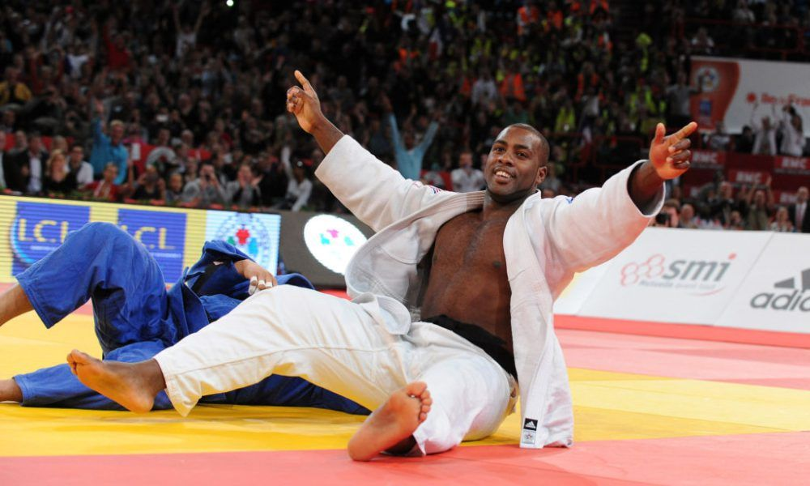

Biographie
Teddy Riner est considéré par beaucoup comme le plus grand judoka de tous les temps. La légende française peut se targuer d’avoir remporté 11 titres mondiaux, soit le plus grand nombre dans l’histoire du judo, et trois médailles d’or olympiques.

L’héritier du trône du judo
Né le 7 avril 1989 à Pointe-à-Pitre, en Guadeloupe, Riner a commencé le sport à l’âge de cinq rans dans un club multiport d’Aquaboulevard, à Paris. Au cours de ses premières années, il a essayé différents sports, tels que l’escalade, le golf, le tennis et la natation, mais c’est finalement le judo qui est devenu sa passion.
À 15 ans, il a intégré l’équipe de France à l’INSEP, avant d’entamer sa carrière professionnelle deux ans plus tard. Riner a aussitôt régné en maître sur le tatami, raflant tous les titres nationaux, européens et mondiaux en junior, pour s’imposer comme l’héritier de la légende du judo français, David Douillet.
Une décennie de succès
En 2007, à seulement 18 ans, Riner est devenu le plus jeune champion du monde de judo grâce à sa médaille d’or récolté aux Championnats du monde de Rio de Janeiro, un an après avoir décroché le titre chez les juniors.
Depuis lors, il s’est adjugé dix autres titres mondiaux, ainsi que quatre médailles olympiques et cinq titres de champion d’Europe, preuve de sa domination sans partage dans ce sport.
Au cours de son illustre carrière chez les pros, Riner n’a connu que cinq défaites, seules ombres au tableau d’un palmarès par ailleurs inégalé. De 2010 à 2020, soit durant toute une décennie, il a dominé la planète judo et affirmé son autorité.
Au cours de cette décennie, il a enchaîné une impressionnante série de 154 matchs consécutifs sans défaite. Seul le Japonais Kageura Kokoro a réussi à mettre fin à cette invincibilité lors du troisième tour du Grand Chelem de Paris en 2020.
N’ayant aucune intention de mettre un point final à sa stupéfiante carrière après des Jeux Olympiques de Paris à domicile, Riner a déjà fait part de son intention de la poursuivre au-delà de 2024.
« Je ne peux pas dire avec certitude que j’arrêterai en 2024. Si tout se passe bien, je pourrai poursuivre ma carrière au-delà. Je n’ai pas de mal à gérer les voyages et les entraînements, je suis en excellente forme physique et je suis enthousiaste dans ce que je fais. La fatigue n’est pas un problème pour moi actuellement, alors pourquoi m’arrêterais-je si je suis passionné par ce que je fais ? Si je me focalise sur 2024, je considère également la possibilité de viser 2028 », a-t-il révélé à L’Équipe.